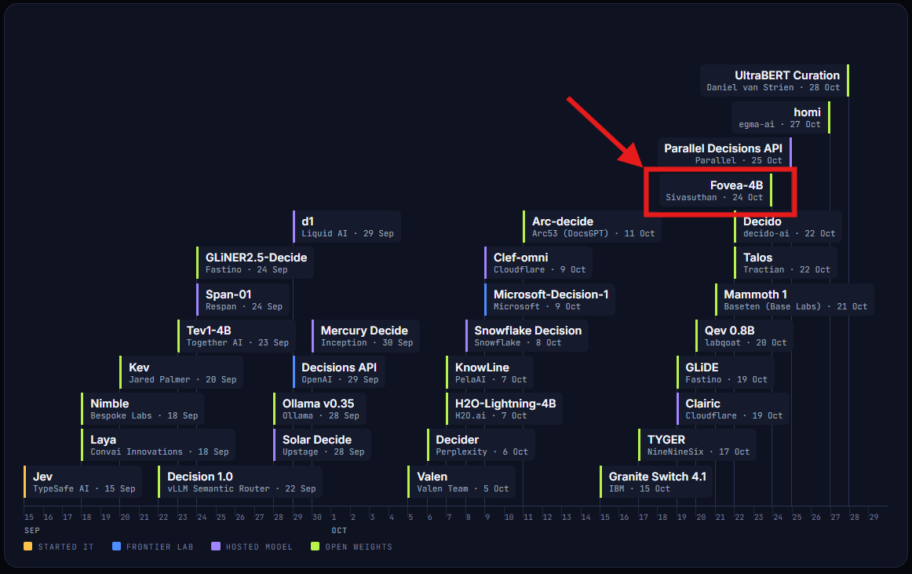
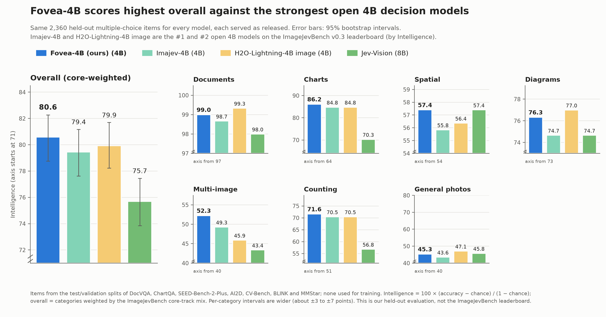
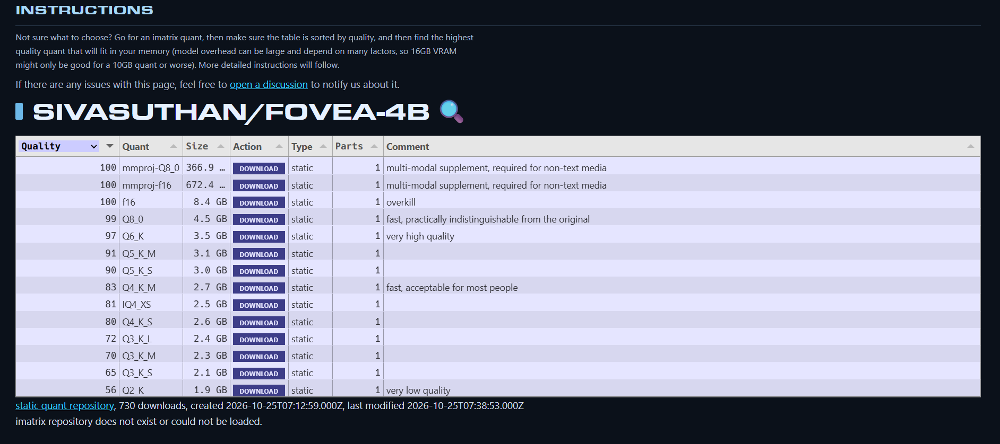

DecisionModels.ai, an independent registry of decision models, lists Fovea-4B as an open-weights release of 24 October 2026 (model page), alongside decision models from OpenAI, Microsoft, IBM, TypeSafe AI, H2O.ai, Snowflake, Perplexity and Ollama. Fovea-4B is marked in red on its release timeline below.

Fovea-4B is a fast decision model for images. It takes an image (a photo, document, receipt, chart or screenshot), a JSON state and a typed question, and returns a probability for every allowed answer in a single forward pass. It supports three question types: yes/no, a choice among named options, and a score on ordered levels. Every answer covers exactly the requested labels, and the probabilities sum to 1.
The model has 4B parameters and is built on Qwen3.5-4B. It is served over TypeSafe's System One API, so any client of that API can call it unchanged, and one GPU with 16 GB of memory is enough to run it. The weights are released under the Apache-2.0 licence.
All-time downloads reported by Hugging Face (recorded 30 Oct 2026).
I compared Fovea-4B with three open decision models: Imajev-4B and H2O-Lightning-4B image, the two strongest open 4B models on the ImageJevBench v0.3 leaderboard by Intelligence, and the larger Jev-Vision (8B). All four answer the same 2,360 held-out multiple-choice questions from public benchmarks. Fovea-4B scores 80.6 overall, against 79.9, 79.4 and 75.7, and has the lowest expected calibration error of the four (0.035).

AI News Radar covered the release under the title "Sivasuthan releases self-hostable Fovea-4B image decision model".
"Fovea-4B makes a specialized vision workflow easier to deploy: instead of generating prose, it scores options an application supplies and returns a probability distribution."
AI News Radar, ainews.leverageai.com.au
mradermacher released static GGUF quantisations of Fovea-4B on 25 October 2026, from Q2_K (1.9 GB) to f16 (8.4 GB), together with the multi-modal projector files (mmproj) that image input needs. The files are on Hugging Face, and the full list with sizes is on hf.tst.eu.

The fovea-sdk package on PyPI is a client for a running Fovea server, and can also run the model on your own GPU.
pip install fovea-sdk # client only, no extra packages pip install "fovea-sdk[local]" # also runs the model on your own GPU
from fovea_sdk import FoveaClient
fovea = FoveaClient("http://127.0.0.1:8000")
a = fovea.choice("What is the total on the receipt in `image`?",
["12.40", "14.20", "21.40"], image="receipt.jpg")
print(a.value, a.probability)
@misc{sivasuthansukumar2026fovea,
title = {Fovea-4B: A Fast, Calibrated Decision Model for Images},
author = {Sukumar, Sivasuthan},
year = {2026},
howpublished = {\url{https://huggingface.co/Sivasuthan/fovea-4b}}
}
Website template from Jathushan Rajasegaran here, whose source is from Jon Barron here